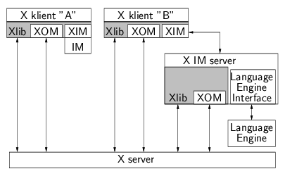
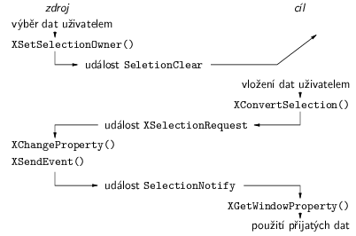

Událost v Xlib reprezentuje union XEvent. Sdru¾uje struktury pro jednotlivé typy událostí. Zaèátek struktury ka¾dé události je stejný. Obsahuje typ události, èíslo po¾adavku X protokolu, jen¾ vygeneroval událost, pøíznak, zda událost vygeneroval X server nebo jiný klient funkcí XSendEvent, displej a okno, kde událost nastala. Za tìmito polo¾kami následují dal¹í polo¾ky v závislosti na typu události.
X server generuje události a ukládá je do fronty. Události z fronty server rozesílá klientùm. Kopii urèité události po¹le v¹em klientùm, kteøí mají nastavený pøíjem tohoto typu událostí. Ka¾dý klient si vybírá typy událostí samostatnì pro ka¾dé okno funkcí XSelectInput. Nepotøebné typy událostí je mo¾né pøi zpracování prostì ignorovat, ale lep¹í je je nevybírat, proto¾e pak je X server vùbec neposílá a ¹etøí se pøenosová kapacita mezi serverem a klientem.
Klient po úvodní inicializaci a vytvoøení oken obvykle zahájí cyklus zpracování událostí, který vypadá zhruba takto:
while(1) {
XNextEvent(display, &event);
switch(event.type) {
case Expose:
...
case ButtonPress:
...
case MappingNotify:
...
default:
/* ignorované události */
}
}
Funkce XNextEvent vrátí první událost z fronty. Pokud je fronta
prázdná, vyprázdní buffer po¾adavkù a èeká na pøíchod události. Xlib definuje
øadu dal¹ích funkcí pro neblokující ètení událostí nebo pro výbìr událostí
z fronty na základì rùzných kritérií, jako typ události, okno, nebo obecná
podmínka reprezentovaná boolovskou funkcí.
Události z my¹i a klávesnice se doruèují do okna, v nìm¾ je kurzor my¹i. Pokud toto okno nemá vybraný pøíslu¹ný typ události, propaguje se událost smìrem k rodièovským oknùm. Distribuce událostí z klávesnice dále závisí na nastavení keyboard focus. Pokud má nìkteré okno nastavený focus, dostává ve¹keré události z klávesnice, které vzniknou vnì tohoto okna. Uvnitø okna s focusem funguje doruèování událostí normálnì, tj. událost dostane potomek, v nìm¾ je kurzor. Top-level oknùm pøidìluje focus window manager. Aplikace, její¾ top-level okno dostalo focus, jej mù¾e pøidìlit potomkùm top-level okna pomocí XSetInputFocus. Pøi tom se generují události FocusOut a FocusIn. Alternativnì mù¾e aplikace ponechat focus na top-level oknì a uvnitø nìho pou¾ívat pro distribuci událostí z klávesnice nìjaký interní mechanismus. Tuto metodu pou¾ívá napø. GTK+.
Existují situace, kdy je potøeba zajistit, ¾e události z my¹i èi klávesnice bude po urèitou dobu dostávat pouze jediný klient bez ohledu na to, kde událost nastala. Takový klient si nastaví tzv. grab voláním XGrabPointer nebo XGrabKeyboard. Opìtné uvolnìní my¹i a klávesnice se provede funkcemi XUngrabPointer a XUngrabKeyboard. Obvykle je potøeba, aby informaci o uvolnìní tlaèítka my¹i dostalo stejné okno, ve kterém u¾ivatel tlaèítko stiskl. Proto X server automaticky nastaví po stisku tlaèítka grab my¹i, pokud má klient vybrané události ButtonPress i ButtonRelease. Nìkdy je nutné po omezenou dobu vyhradit X server pro jediného klienta. Napø. nìkteré window managery pøi interaktivním pøesunu nebo zmìnì velikosti okna kreslí prùbì¾nì obrys okna a teprve nakonec pøekreslí celé okno. Aby nebylo tøeba pamatovat si pùvodní hodnoty pixelù pøekrytých obrysem, kreslí se obrys pomocí kombinace s pùvodní hodnotou pixelù operací XOR. Z vlastností XOR plyne, ¾e opìtovné pøekreslení obnoví pùvodní hodnotu a tedy obrys sma¾e. To ale platí jen tehdy, pokud se bìhem dvou kreslicích operací hodnoty pixelù nezmìní. Proto pøed zahájením interaktivní manipulace s oknem window manager zavolá XGrabServer a po definitivním umístìní okna uvolní grab pomocí XUngrabServer. Mezi tìmito dvìma voláními X server nezprácováná ¾ádné po¾adavky ostatních klientù. Obecnì platí, ¾e jakýkoliv grab by se mìl pou¾ívat, pouze kdy¾ je to nezbytnì nutné.
Události z klávesnice reprezentované strukturou XKeyEvent obsahují kód stisknuté nebo uvolnìné klávesy (XKeyEvent.keycode) a stav modifikátorù, tj. kláves jako Shift a Ctrl, v polo¾ce XKeyEvent.state. Mapování mezi fyzickými klávesami a hodnotami keycode je pevnì dané X serverem. Klient obvykle událost pøedá funkci XLookupString. Ta pøevede keycode na keysym a na øetìzec. Keysym je symbolická konstanta reprezentující klávesu, napø. XK_a nebo XK_Page_Up. Tabulka pro mapování z keycode na keysym je definovaná globálnì v X serveru. Dá se mìnit utilitami xmodmap nebo setxkbmap. Druhá mo¾nost vyu¾ívá roz¹íøení XKB (X Keyboard Extension), které poskytuje vìt¹í flexibilitu pøi definování rozlo¾ení klávesnice ne¾ standardní obsluha klávesnice v X. Proto¾e pøevodní tabulka je v serveru a pøevod na keysym dìlá klient, roze¹le server pøi zmìnì rozlo¾ení klávesnice událost MappingNotify, na ni¾ klienti zareagují aktualizací své kopie klávesové mapy pomocí XRefreshKeyboardMapping. Standardní mapování z keysym na øetìzec pøiøazuje klávesám generujícím platné znaky jednoznakové øetìzce. Ostatním klávesám (¹ipky, funkèní klávesy) pøiøazuje prázdný øetìzec. Funkce XRebindKeysym umo¾òuje zmìnit toto mapování lokálnì v rámci jednoho klienta.
Nìkteré jazyky mají slo¾itìj¹í schéma psaní znakù ne¾ 1 klávesa = 1 znak. Jeden znak mù¾e být vytvoøen posloupností nìkolika stiskù kláves. Takové skládání kláves øídí vstupní metody (input methods). Napø. pro nìkteré asijské jazyky pou¾ívající písmo s velkým poètem znakù u¾ivatel napí¹e název znaku v transkripci do latinky. Vstupní metoda mu pøitom ve speciálním oknì zobrazuje aktuální stav a umo¾òuje editaci. Nakonec se celý dlouhý název znaku pøekonvertuje na jediný znak a po¹le se aplikaci. Dal¹ím pøíkladem je i èe¹tina. Obvyklá èeská klávesnice pou¾ívá mrtvé klávesy pro èárku a háèek. Stisk mrtvé klávesy následovaný písmenem vygeneruje jediné èárkované nebo háèkované písmeno. O slo¾ení dvou kláves do jednoho písmene se opìt postará vstupní metoda. Zapojení vstupních metod do komunikace mezi X serverem a klienty je zobrazeno na obr. 1. Klient A má jednoduchou vstupní metodu implementovanou jako souèást Xlib. To mù¾e být pøípad èeských mrtvých kláves. Klient B pou¾ívá komplexní vstupní metodu fungující jako samostatný program napojený na server i klienta. Pro konverze znakù nebo tøeba hledání znakù èi slov ve slovníku pou¾ívá vstupní metoda externí language engine.

Obr. 1: Vstupní metody
Na stranì klienta je potøeba nastavit správné locale (setlocale(LC_ALL, "")), otestovat, zda je podporované v Xlib (XSupportsLocale) a nastavit pøípadné modifikátory (XSetLocaleModifiers) podle environmentové promìnné XMODIFIERS. Pak u¾ je mo¾né otevøít vstupní metodu (XOpenIM) a vytvoøit vstupní kontext (XCreateIC). Bìhem zpracování událostí se ka¾dá událost pøijatá funkcí XNextEvent nejprve pøedá vstupní metodì pomocí XFilterEvent a podle návratové hodnoty klient buï událost ignoruje, nebo ji dále zpracovává, napø. pomocí XLookupString.
X Window System obsahuje mechanismy pro komunikaci mezi klienty. Její pravidla definuje dokument Inter-Client Communication Conventions Manual (ICCCM). Do tohoto manuálu je vhodné se v¾dy pøi pou¾ití nìkterého komunikaèního mechanismu podívat na detaily jeho fungování. Komunikace je zprostøedkovaná serverem, tak¾e klienti nemusí mít mezi sebou pøímé spojení. Základním prostøedkem pro pøedávání dat jsou properties, co¾ jsou jakési balíèky dat pøipojené k oknùm. Ka¾dé okno jich mù¾e nést nìkolik. Property je identifikovaná jménem a èíslem okna. Jsou v ní ulo¾ena data a jméno typu dat. Ka¾dý klient mù¾e mìnit libovolnou property. Server pøi zmìnì property vygeneruje událost PropertyNotify.
Jako jména properties a typù se pou¾ívají atomy. Atom je jednoznaèný èíselný identifikátor. Zásadní problém takových identifikátorù jsou kolize, kdy dva logicky rùzné identifikátory mají stejnou hodnotu. Pravdìpodobnost kolizí se sní¾í pou¾íváním del¹ích identifikátorù, napø. textových øetìzcù. Pou¾ívání textových identifikátorù by v¹ak zvìt¹ovalo objem dat pøená¹ených mezi serverem a klientem. Øe¹ení pou¾ité v X funguje tak, ¾e ka¾dý atom má jméno. Klient pomocí XInternAtom po¹le serveru øetìzec a server mu vrátí atom. Pokud je funkce XInternAtom volána nìkolikrát se stejným øetìzcem, vrátí stejný atom. Pro rùzné øetìzce vrací rùzné atomy.
Funkce XSetWMProperties slou¾í pro nastavení standardní sady properties, jimi¾ klient pøedává informace window manageru. Klient urèuje titulek okna a ikony, obsah pøíkazového øádku pou¾itelného pro restart klienta a jméno poèítaèe, kde klient bì¾í, dále ikonu a její poèáteèní pozici, omezení velikosti okna, poèáteèní stav okna (normální/ikona), model pro pøidìlování fokusu klávesnice a identifikátor skupiny top-level oken pøíslu¹ných ke stejné aplikaci. Nastavením identifikátorù protokolù do property WM_PROTOCOLS øíká klient, ¾e chce od window manageru dostávat informace ve formì událostí ClientMessage. Protokol WM_TAKE_FOCUS slou¾í ke sdìlení, kdy si aplikace smí nastavit focus voláním XSetInputFocus. Pomocí protokolu WM_SAVE_YOURSELF sdìluje session manager nebo window manager klientovi, aby ulo¾il svùj stav, nebo» bude ukonèen. Kdy¾ klient pou¾ívá protokol WM_DELETE_WINDOW a u¾ivatel zkusí zavøít okno prostøednictvím window manageru (obvykle kliknutím na zavírací tlaèítko v rámeèku okna), pøedá window manager ¾ádost o zavøení okna klientovi. Klient si mù¾e vy¾ádat potvrzení od u¾ivatele nebo ulo¾it data a následnì buï okno zavøít, nebo ¾ádost ignorovat. Klient nepou¾ívající WM_DELETE_WINDOW bude odpojen od X serveru, jakmile u¾ivatel prostøednictvím window manageru zavøe nìkteré jeho top-level okno.
Pro pøená¹ení dat mezi klienty se pou¾ívají výbìry (selections). V Xlib se s nimi pracuje velmi podobnì jako v GTK+. Schéma fungování výbìrù je na obr. 2. V¹imnìte si, ¾e vypadá témìø stejnì jako obr. 1 v 5. dílu tohoto seriálu.

Obr. 2: Komunikace pomocí výbìrù
Výbìrù lze definovat libovolnì mnoho, ale obvykle se pou¾ívá XA_PRIMARY. Kdy¾ si u¾ivatel vybere nìjaká data, klient si pøivlastní výbìr funkcí XSetSelectionOwner. Pøedchozí vlastník výbìru je o tom informován událostí SelectionClear. Kdy¾ chce u¾ivatel vlo¾it data do nìjakého okna, klient vlastnící toto okno zavolá XConvertSelection. V parametrech zadá property, do ní¾ má vlastník data vlo¾it, a po¾adovaný typ dat (target). Vlastník výbìru dostane událost XSelectionRequest a v reakci na ni ulo¾í data do property pomocí XChangeProperty a funkcí XSendEvent po¹le pøíjemci dat událost SelectionNotify. Pøíjemce si pak data vyzvedne voláním XGetWindowProperty.
Pro konfiguraci aplikací poskytuje Xlib funkce pro práci s tzv. resource databází. Jednotlivé konfiguraèní hodnoty (resources) se pøi startu programu ètou z nìkolika míst. V poøadí podle priority od nejmen¹í po nejvìt¹í jsou to postupnì:
Na zaèátku programu je nutné nejprve volat inicializaèní funkci XrmInitialize. Jednotlivé èásti resource databáze se ètou pomocí funkcí XrmParseCommand, XrmGetFileDatabase a XrmGetStringDatabase. Nakonec se v¹e spojí do jediné databáze voláním XrmMergeDatabases.
Jednotlivé polo¾ky resource databáze jsou øádky tvaru jméno: hodnota. Hodnota je øetìzec, do kterého je mo¾né pomocí escape sekvencí vkládat libovolné znaky, napø. „\n“ je konec øádku a „\123“ je znak s oktalovým èíslem 123. Zajímavìj¹í je jméno polo¾ky. Skládá se z komponent oddìlených teèkami. Ka¾dá komponenta je buï jméno tøídy zaèínající velkým písmenem, nebo jméno instance zaèínající malým písmenem. V aplikacích pou¾ívajících X Toolkit odpovídají jednotlivé komponenty úrovním stromu widgetù. V programech postavených pøímo nad Xlib je mo¾né stromovou strukturu resource databáze pou¾ít pro logické uspoøádání konfiguraèních hodnot. Místo libovolné komponenty jména (kromì poslední), se dá pou¾ít wildcard otazník. Posloupnost libovolnì mnoha komponent lze nahradit wildcardem hvìzdièka. Pøíklad úseku resource databáze:
Fig.exportLanguage: eps .xf86cfg.geometry: 320x400 XCalc*hp.button1.horizDistance: 4 *Text.?.background: rgb:29/44/94
Pro hledání v databázi slou¾í funkce XrmGetResource. Jako parametry dostane dvì kompletní jména polo¾ek bez wildcardù. Jedno jméno je posloupnost jmen tøíd, ve druhém jsou pouze jména instancí. Funkce najde v databázi nejlépe odpovídající polo¾ku a vrátí ji. Pokud se pøi vytváøení databáze narazí na nìkolik polo¾ek s pøesnì stejným jménem, ponechá se pouze poslední z nich. Jestli¾e zadanému klíèi odpovídá nìkolik polo¾ek, porovnávají se po komponentách zleva doprava a v¾dy se ponechají jen polo¾ky s nejvìt¹í prioritou. Porovnávání pokraèuje, dokud nezùstane jediná polo¾ka. Pravidla pro priority zaji¹»ují, ¾e konkrétnìji specifikovaná polo¾ka má pøednost pøed obecnou. Polo¾ka, která obsahuje aktuálnì testovanou komponentu (*topLevel.quit.background, *topLevel.Command.background a *topLevel.?.background) má pøednost pøed polo¾kou, která komponentu pøeskakuje pomocí hvìzdièky (*topLevel*background). Polo¾ka se jménem instance (*quit.background) má pøednost pøed polo¾kou obsahující jméno tøídy (*Command.background) a ta má pøednost pøed wildcardem otazník (*?.background). Polo¾ka, pøed ní¾ je teèka (*box.background), má pøednost pøed polo¾kou, kterou pøedchází hvìzdièka (*box*Background).
Window manager je normální X klient, ale má speciální roli – spravuje top-level okna ostatních klientù. Pro tento úèel mu Xlib poskytuje nìkolik speciálních nástrojù. První je substructure redirection. Window manager si v masce událostí root okna nastaví SubstructureRedirectMask. Jestli¾e jiný klient zkusí namapovat svoje top-level okno nebo zmìnit jeho pozici, velikost, ¹íøku okraje èi stacking order, tato operace se nepovede a místo toho se window manageru po¹le událost CirculateRequest, ConfigureRequest, nebo MapRequest obsahující popis po¾adavku klienta. Window manager následnì po¾adavek provede nebo zamítne. Nìkterá okna – napø. popup menu a tooltipy – nejsou øízena window managerem. Pro taková okna je tøeba nastavit atribut override_redirect.
Vìt¹ina window managerù kreslí kolem jednotlivých top-level oken rámeèky. Pro implementaci tìchto rámeèkù se vyu¾ívá reparenting oken. Kdy¾ window manager dostane událost MapRequest, vytvoøí rámeèek – nové top-level okno, o trochu vìt¹í, ne¾ je okno aplikace. Pùvodní top-level okno aplikace vlo¾í do rámeèku, tj. pomocí funkce XReparentWindow zmìní jeho rodièe z koøenového okna na rámeèek. Obì okna pak namapuje.
Tím, ¾e window manager vytvoøí nová rodièovská okna pro top-level okna aplikací a obèas nìkterá okna odmapuje a místo nich zobrazí ikony, do¹lo by pøi ukonèení window manageru ke zru¹ení v¹ech takových oken. Proto window manager ukládá v¹echna spravovaná okna do save-set voláním XAddToSaveSet. Pøi ukonèení window manageru X server automaticky v¹em oknùm ze save-set zmìní rodièe zpìt na root okno a okna namapuje.